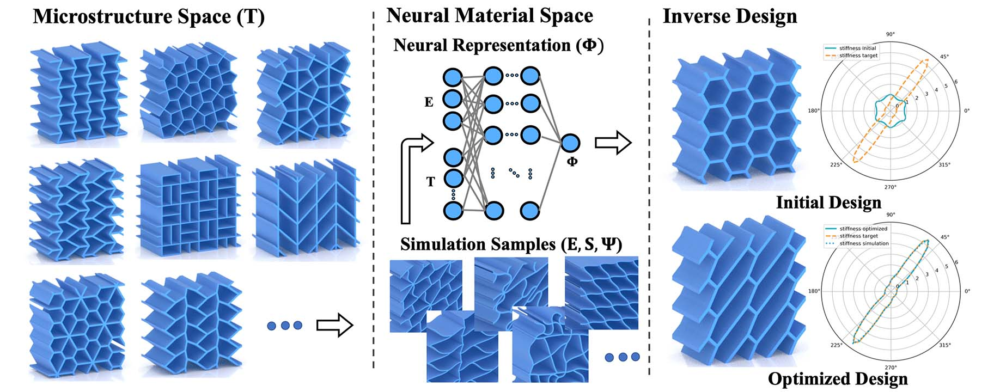
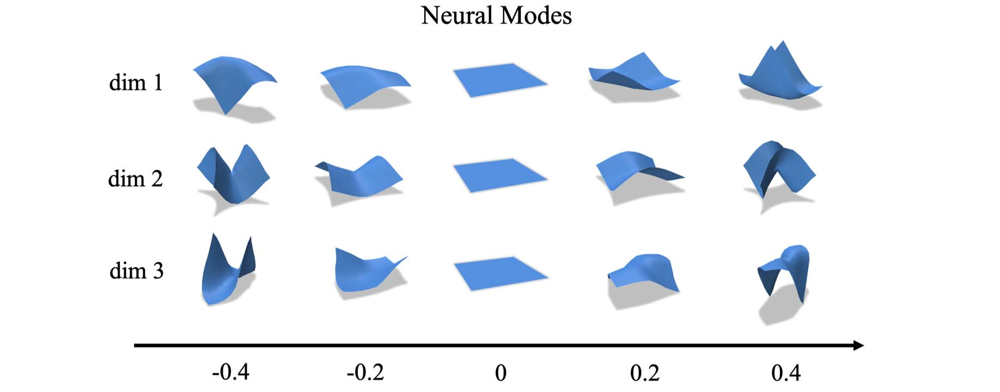
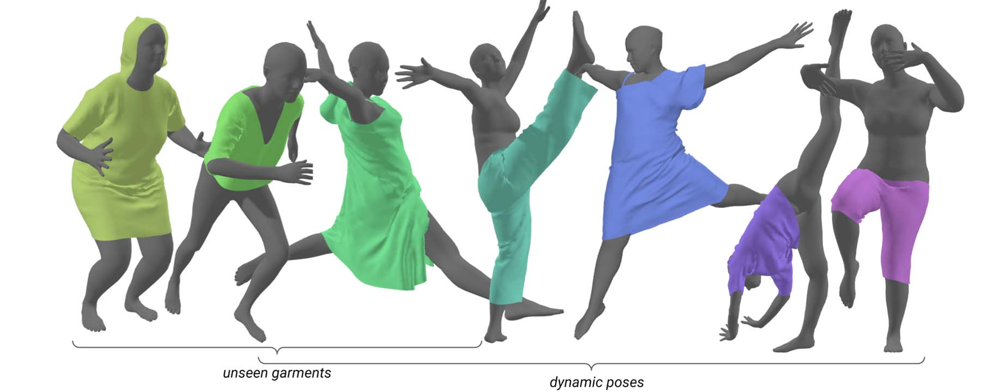
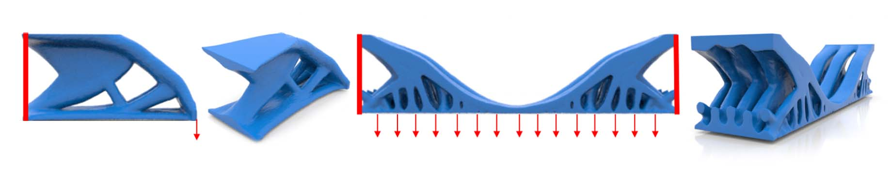

Neural Metamaterial Families

From the physics of soft tissues to the mechanics of complex materials, accurate simulation is key to understanding and predicting real-world behavior. However, traditional computational models are often costly, requiring trade-offs between accuracy and efficiency. Our research bridges simulation and machine learning to develop data-driven models that accelerate computations while preserving physical fidelity. By combining physics-based reasoning with modern AI techniques, we aim to push the boundaries of predictive modeling—enabling faster, more scalable, and more intelligent simulations for applications ranging from digital humans to advanced materials.


Neural Modes: Self-supervised Learning of Nonlinear Modal Subspaces
IEEE/CVF Conference on Computer Vision and Pattern Recognition (CVPR) 2024
We propose a self-supervised approach for learning physics-based subspaces for real-time simulation. Existing learning-based methods construct subspaces by approximating pre-defined simulation data in a purely geometric way. However, this approach tends to produce high-energy configurations, leads to entangled latent space dimensions, and generalizes poorly beyond the training set. To overcome these limitations, we propose a self-supervised approach that directly minimizes the system's mechanical energy during training. We show that our method leads to learned subspaces that reflect physical equilibrium constraints, resolve overfitting issues of previous methods, and offer interpretable latent space parameters.

